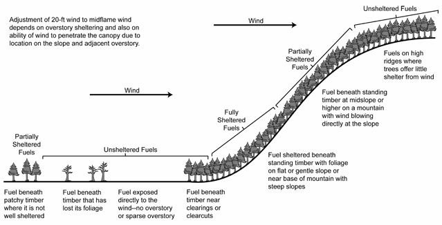

|
Wind Adjustment Factor |
Wind adjustment factor (WAF) is a value between 0 and 1 used to adjust the wind speed at 20-ft above the vegetation to midflame wind speed.
I/O |
Module |
If |
Notes |
| Input | SURFACE | If Wind speed is entered as 20-ft (or 10-m) wind and Input wind adjustment factor is selected as an input option. | |
| Output | SURFACE | If Wind speed is entered as 20-ft (or 10-m) wind and Calculated wind adjustment factor is selected as an input option. |
If Wind speed is entered as 10-m wind and wind adjustment factor is selected, then the 10-m wind speed is divided by 1.15 to get 20-ft wind speed. The wind adjustment factor is then applied to the 20-ft wind speed.
|  |
| Surface fuel sheltering from the wind |
Wind Adjustment Factor (WAF) |
Fuel Model |
|---|---|---|
Unsheltered
|
0.5 |
(depth < 0.9 ft, < 0.3 m) |
| 0.4 |
(depth 0.9 - 2.7 ft, 0.3 - 0.8 m) | |
| 0.3 |
(depth > 2.7 ft, > 0.8 m) |
|
Partially sheltered
|
0.3 |
|
Fully Sheltered
|
0.2 |
|
| 0.1 |
|